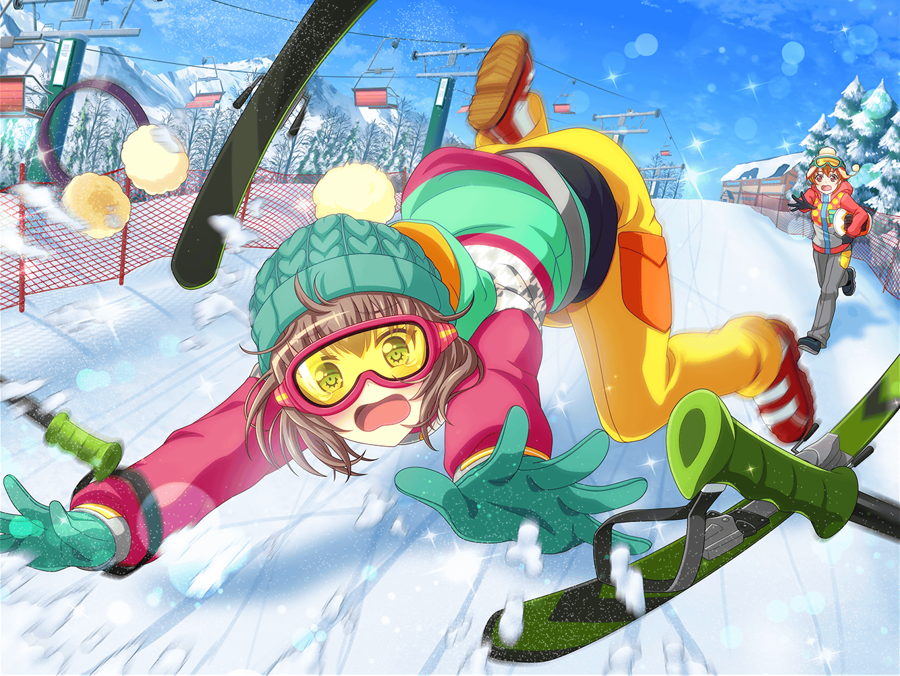

公園
はぐみ
麻弥さーん、いっくよー！
麻弥
は、はいー！
麻弥
んぐっ！ うう……また空振り
はぐみ
どんまいどんまーいっ！
美咲
……うーん、なんであたしがキャッチャーやってるんだろう
麻弥
すみません奥沢さん、無理に付き合わせてしまって……
美咲
ああいえ、大丈夫ですよ。暇だったんで
はぐみ
そういえば麻弥さん、
今日はどうしてソフトボールをやろうって思ったの？
麻弥
この前、皆さんと一緒にスキーに行ったじゃないですか。
あの時、はぐみさんのおかげで、
ちょっとスキーが滑れるようになったんですよ
美咲
確かに、最後のほうは転ばずに滑れてましたもんね
麻弥
はい！ ジブンはあまり運動が得意なほうじゃないんですが、
あの時にスキーへの苦手意識はなくなりまして。苦手なことも
ちゃんと練習すればできるようになるんだって思ったんです
麻弥
それなら、せっかくなのでスポーツ全般の苦手意識をなくして、
もっと運動を楽しみたいと思いまして
美咲
気持ちはわかるけど……
ソフトボールは結構大変だと思いますよ？
麻弥
え、そうなんですか？
美咲
うん、走るとか跳ぶとか、
もうちょっと単純なヤツでもよかったんじゃないですかね
麻弥
……言われてみるとそうかもしれませんね
はぐみ
だいじょぶだよ！
ちゃんと練習すれば絶対できるようになるから！
麻弥
そ、そうですよね！
スキーもできたんですから、ソフトボールもできるように……
はぐみ
うんうんっ！
はぐみもソフトボールを始めた頃は、手にマメができて、
それがつぶれるまで練習したよ！ だから、麻弥さんも大丈夫！
麻弥
えっ……手にマメができると
ドラムが叩けなくなるので、それはちょっと……
はぐみ
大丈夫大丈夫！
手のマメも慣れたら痛くなくなるし！
美咲
いやいやいや、さすがに大和さんは
そこまで本気でソフトボールはやらないでしょ
麻弥
いえ！ やるからには全力でやらないとですよね……
ジブンも、マメを２個３個とつぶす覚悟で
やらせていただきます！
はぐみ
おおっ！ 麻弥さん、燃えてる！
よーっし！ じゃあ、はぐみもボールを投げ続けるからねっ！
いくよー！
美咲
真剣なのはいいけど、
力の入れる方向間違ってるんじゃないかな……
はぐみ
麻弥さん、ボールをよく見てバットを振るんだよ！
麻弥
わ、わかりましたー！
はぐみ
振るって決めたら、バシッと振っちゃおう！
麻弥
は、はいー！
美咲
あの、麻弥さん。
気持ちはわかりますけど、そんなに焦って苦手を
克服しようと思わなくてもいいんじゃないですか
美咲
人にはそれぞれ得手不得手があって当然というか
麻弥
でも、せっかくはぐみさんや奥沢さんが
一緒にやってくれているので、がんばりたいんです
美咲
大和さん……
はぐみ
はぐみは麻弥さんがソフトボールができるようになるまで、
今日はとことん付き合うからね！
麻弥
はぐみさん、ありがとうございます！
美咲
え……それってあたしもずっとキャッチャーやるってこと……？
はぐみ
みーくん、よろしくねっ！
麻弥
お願いします！ 奥沢さん！
美咲
はあ……ま、いいですけど……
あんまり無理しないでくださいね、大和さん
麻弥
はい！ ……それにしても、
どうしたらバットに球が当たるんでしょうか
はぐみ
一番大切なのは、キュッとしてガッだよ！
麻弥
キュッとしてガッ……
美咲
それじゃ伝わらないよ、はぐみ
はぐみ
ええ！？ う、う～んとぉ……
麻弥
いえ、大丈夫です。
脇を締めてコンパクトにバットを振るってことで、いいですか？
はぐみ
あ、たぶんそうそうっ！
美咲
え……なんでわかったんですか？
麻弥
なんでしょう……ニュアンスでしょうか……
美咲
ニュアンスって……
麻弥
雪山でも思ったことなのですが、
はぐみさんは知識や理屈じゃなくて、体の感覚を
教えてくれようとしてるんじゃないでしょうか？
美咲
体の感覚って？
麻弥
向かってくるボールを打つためには、タイミング良くバットを
振ればいいというのはなんとなくジブンのような
運動音痴でもわかるんです。奥沢さんもわかりますよね？
美咲
まあ……でもそれってすごく難しいですよね
麻弥
はい、だからはぐみさんは、
タイミング良くバットが振れたときの体の感覚を、
伝えてくれようとしているんだと思うんです
美咲
すみません……全然わかりません
麻弥
ええと、ボールにバットが当たるように振れているときの、
はぐみさんの体の感覚をジブン達にも
教えてくれようとしている……んだと思います
美咲
はぐみ自身がうまくいったときの感覚を
伝えようとしているってことですか？
麻弥
あ、はい！ そうだと思います！
美咲
なるほど……ちょっとわかるような、
いや〜……でもやっぱりわからないような
麻弥
ジブンもあやふやですが、スキーもうまくいきましたし、
その感覚を頼りにやってみようと思いました。
なんでも、やってみるしかないですし！
美咲
大和さんって前向きですね
麻弥
そんなことはないですよ〜。
でも、教えてくれるはぐみさんや手伝ってくれる
奥沢さんに恥ずかしいところは見せられませんから！
はぐみ
二人ともー？ いくよー？
麻弥
はい！ お願いしまーす！
はぐみ
とりゃあ〜！
麻弥・はぐみ・美咲
あ……
美咲
当たった
麻弥・はぐみ
やったーー！！
美咲
本当に……やればできるものなんですね、なんでも